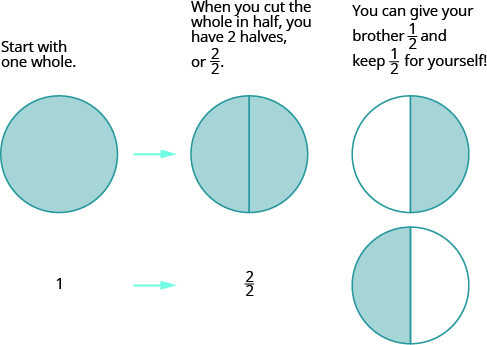
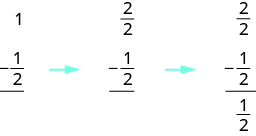
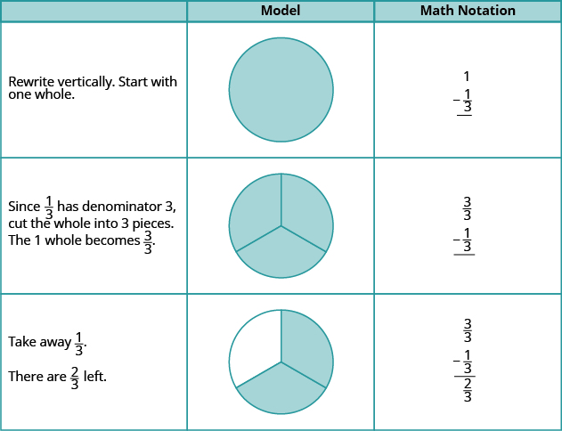
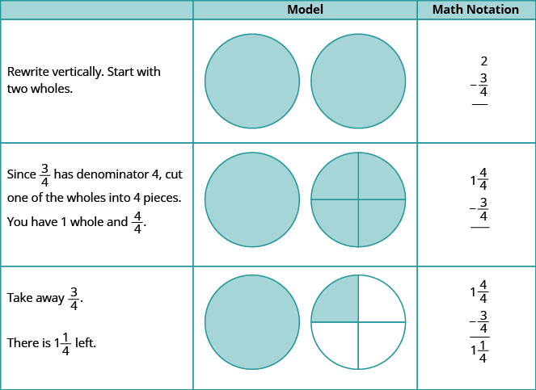
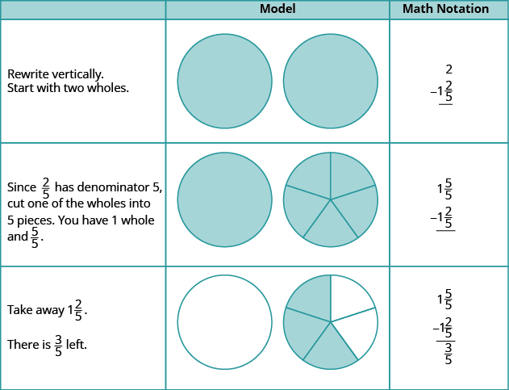
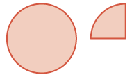
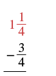
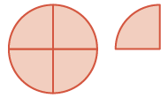
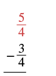
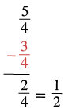

মডেলের সাহায্যে মিশ্র ভগ্নাংশের বিয়োগ
উৎস-অনুগত উপবিভাগ · m81290-fs-id4155624। সম্পূর্ণ বইয়ের অনুবাদ এখনও চলছে। গাণিতিক চিহ্ন, সংখ্যা ও মূল কাঠামো অক্ষুণ্ণ; প্রযোজ্য ক্ষেত্রে সূত্রের শব্দলেবেল বাংলায় অনূদিত। মূল ছবির ভিতরের ইংরেজি লেবেলের অর্থ বাংলা বিবরণে আছে। স্বাধীন শিক্ষক ও ভাষা-পর্যালোচনা বাকি। অন্য উপবিভাগের উৎস-লিঙ্কে ইন্টারনেট প্রয়োজন।
মডেলের সাহায্যে মিশ্র ভগ্নাংশের বিয়োগ
একই হরযুক্ত মিশ্র ভগ্নাংশের বিয়োগের মডেল তৈরি করতে আবার পিৎজার কথা ভাবি। ধরো, তুমি একটি গোটা পিৎজা তৈরি করেছ এবং তোমার ভাইকে তার অর্ধেক দিতে চাও। তাকে অর্ধেক দিতে হলে পিৎজাটি কীভাবে ভাগ করবে? অন্তত দুটি টুকরো করতে হবে, যাতে তার অর্ধেক আলাদা করা যায়। যেমন, দুটি সমান ভাগ করে একটি ভাগ তাকে দিতে পারো।
প্রক্রিয়াটি চোখের সামনে বোঝার জন্য আমরা ভগ্নাংশের বৃত্ত ব্যবহার করব—এগুলিকে পিৎজা ভাবতে পারো! সব গোটা বৃত্ত একই মাপের এবং প্রতিটি গোটা বৃত্তের ভগ্নাংশগুলি সমান ভাগ।
একটি গোটা বৃত্ত নিয়ে শুরু করো।

বাঁ থেকে ডানে তিন ধাপ: একটি সম্পূর্ণ রং করা বৃত্ত, তার নীচে 1; তিরচিহ্নের পরে একই গোটা বৃত্ত দুটি সমান অর্ধেকে ভাগ করা, নীচে 2/2। শেষ ধাপে উপর-নীচে দুটি বৃত্ত: উপরেরটিতে ডান অর্ধেক এবং নীচেরটিতে বাঁ অর্ধেক রং করা। ইংরেজি লেখায় বোঝানো হয়েছে, একটি অর্ধেক ভাইকে দিলে অন্য অর্ধেক নিজের কাছে থাকে।
গাণিতিক চিহ্নে এভাবে লিখবে:

তিরচিহ্ন দিয়ে যুক্ত উপর-নীচে সাজানো বিয়োগের তিন ধাপ। প্রথমে 1 থেকে 1/2 (লব 1, হর 2) বিয়োগ। তারপর 1-কে 2/2 (লব 2, হর 2) লিখে একই 1/2 বিয়োগ। শেষে 2/2 থেকে 1/2 বিয়োগ করে 1/2 বাকি।
অনুশীলন · এই প্রশ্নের লিঙ্ক
মডেলের সাহায্যে বিয়োগ করো:
সমাধান

তিনটি স্তম্ভের সারণি: নির্দেশ, মডেল ও গাণিতিক চিহ্ন। শিরোনামের নীচে তিনটি ধাপ আছে। প্রথমে একটি রং করা গোটা বৃত্ত নিয়ে উপর-নীচে 1 থেকে 1/3 বিয়োগ লেখো। এরপর গোটা বৃত্তটি তিনটি সমান ভাগে ভাগ করে 1-কে 3/3 লেখো। শেষে একটি তৃতীয়াংশ বাদ দিলে দুটি তৃতীয়াংশ রং করা থাকে; 3/3 থেকে 1/3 বিয়োগের ফল 2/3।
একটির বেশি গোটা বৃত্ত নিয়ে শুরু করলে কী হবে? তা দেখে নিই।
অনুশীলন · এই প্রশ্নের লিঙ্ক
মডেলের সাহায্যে বিয়োগ করো:
সমাধান

নির্দেশ, মডেল ও গাণিতিক চিহ্নের সারণি। শিরোনামের নীচে তিন ধাপ। প্রথমে দুটি রং করা গোটা বৃত্ত নিয়ে 2 থেকে 3/4 বিয়োগ লেখো। পরের ধাপে একটি গোটা চারটি সমান ভাগে ভাগ করো; মোট পরিমাণ এখন 1 ও 4/4। শেষে তিনটি চতুর্থাংশ বাদ দিলে একটি রং করা গোটা ও আরেক বৃত্তের একটি চতুর্থাংশ রং করা থাকে। বিয়োগফল 1 ও 1/4।
পরের উদাহরণে যে পরিমাণ বিয়োগ করব, তা একটি গোটা বৃত্তের চেয়ে বেশি।
অনুশীলন · এই প্রশ্নের লিঙ্ক
মডেলের সাহায্যে বিয়োগ করো:
সমাধান

নির্দেশ, মডেল ও গাণিতিক চিহ্নের সারণি; শিরোনামের নীচে তিন ধাপ। প্রথমে দুটি রং করা গোটা থেকে 1 ও 2/5 বিয়োগ লেখো। একটি গোটা পাঁচটি সমান ভাগে ভাগ করলে মোট পরিমাণ হয় 1 ও 5/5। তারপর একটি গোটা ও দুটি পঞ্চমাংশ বাদ দাও। শেষে প্রথম বৃত্তটি রংহীন; অন্য বৃত্তের পাঁচ ভাগের তিনটি রং করা। বাকি 3/5।
একটি মিশ্র ভগ্নাংশ থেকে ভগ্নাংশ বিয়োগ করতে হলে কী করবে? এই পরিস্থিতিটি ভাবো: গাড়ি রাখার মূল্য দেওয়ার যন্ত্রে তিনটি কোয়ার্টার মুদ্রা ঢোকাতে হবে। এখানে একটি কোয়ার্টারের মূল্য এক ডলারের এক-চতুর্থাংশ। কিন্তু তোমার কাছে আছে শুধু -এর একটি নোট ও একটি কোয়ার্টার। তুমি কী করতে পারো? ডলারের নোটটি ভাঙিয়ে টি কোয়ার্টার নিতে পারো। টি কোয়ার্টারের মোট মূল্য এক ডলারের নোটের সমান, কিন্তু ওই যন্ত্রে ব্যবহারের জন্য টি কোয়ার্টার বেশি কাজে লাগে। এখন -এর নোট ও একটি কোয়ার্টারের বদলে তোমার কাছে আছে টি কোয়ার্টার। তার মধ্যে টি যন্ত্রে ঢোকাতে পারো।
মিশ্র ভগ্নাংশ থেকে ভগ্নাংশ বিয়োগ করার সময় কী ঘটে, এই ঘটনাটি তার মডেল। আমরা এক ডলার ও একটি কোয়ার্টারের মোট মূল্য থেকে তিনটি কোয়ার্টারের মূল্য বিয়োগ করেছি।
মিশ্র ভগ্নাংশের যোগের মতো, ভগ্নাংশের বৃত্ত দিয়েও এই বিয়োগের মডেল তৈরি করা যায়।
অনুশীলন · এই প্রশ্নের লিঙ্ক
মডেলের সাহায্যে বিয়োগ করো:
সমাধান
| সংখ্যা দুটিকে উপর-নীচে সাজিয়ে বিয়োগ লেখো। একটি গোটা বৃত্ত ও তার এক-চতুর্থাংশ নিয়ে শুরু করো। |  পাশাপাশি হালকা কমলা রঙে ভরা একটি গোটা বৃত্ত ও একই মাপের বৃত্তের আলাদা এক-চতুর্থাংশ। মোট 1 ও 1/4। |
 উপর-নীচে সাজানো বিয়োগ। উপরে লাল রঙে মিশ্র ভগ্নাংশ: পূর্ণসংখ্যা অংশ 1, ভগ্নাংশ অংশের লব 1 ও হর 4। নীচে কালো বিয়োগচিহ্নসহ 3/4, যার লব 3 ও হর 4; তার নীচে অনুভূমিক রেখা। |
| ভগ্নাংশগুলির হর 4, তাই গোটা বৃত্তটিকে 4টি সমান ভাগ করো। এখন আছে এবং । সব মিলিয়ে হয় । |
 একটি গোটা বৃত্ত চারটি সমান ভাগে বিভক্ত; চারটি ভাগই হালকা কমলা রঙে ভরা। পাশে আলাদা একটি রং করা চতুর্থাংশ। মোট পাঁচটি চতুর্থাংশ। |
 উপর-নীচে সাজানো বিয়োগ। উপরে লাল রঙে 5/4, যার লব 5 ও হর 4। নীচে কালো বিয়োগচিহ্নসহ 3/4, যার লব 3 ও হর 4। |
| বাদ দাও । বাকি থাকে । |
চারটি সমান ভাগে বিভক্ত বৃত্তের বাঁ দিকের দুটি ভাগ হালকা কমলা রঙে ভরা। ডান দিকের দুটি ভাগ ও পাশে থাকা আলাদা চতুর্থাংশটি রংহীন। অবশিষ্ট রং করা অংশ 2/4, অর্থাৎ অর্ধেক গোটা। |
 উপর-নীচে 5/4 (লব 5, হর 4) থেকে 3/4 (লব 3, হর 4) বিয়োগ করে 2/4 (লব 2, হর 4) পাওয়া গেছে। পাশে এই 2/4 সমান 1/2 (লব 1, হর 2) লেখা। যে 3/4 বিয়োগ করা হয়েছে, তা লাল রঙে। |